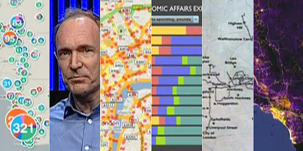

Interactive websites with Clojure, ClojureScript and REST
Malcolm Sparks
Deutsche Bank
The Dream
Let's open our data!
For example...
Train company data
Please note that this data is of a technical nature and you will require a good level of computer skills in order to be able to load and process the data.
malcolm@nessa:~/src/trains> ls -l
-rw-r--r-- 1 malcolm users 141128 May 16 13:16 TTISF723.ALF
-rw-r--r-- 1 malcolm users 152 May 18 22:55 TTISF723.DAT
-rw-r--r-- 1 malcolm users 35049 May 16 13:16 TTISF723.FLF
-rw-r--r-- 1 malcolm users 387108880 May 18 22:48 TTISF723.MCA
-rw-r--r-- 1 malcolm users 361032 May 16 13:16 TTISF723.MSN
-rw-r--r-- 1 malcolm users 10 Feb 23 2005 TTISF723.SET
-rw-r--r-- 1 malcolm users 980 Mar 4 2010 TTISF723.TSI
-rw-r--r-- 1 malcolm users 5856358 May 16 13:15 TTISF723.ZTR
malcolm@nessa:~/src/trains> wc -l *
2595 TTISF723.ALF
9 TTISF723.DAT
601 TTISF723.FLF
4720840 TTISF723.MCA
4298 TTISF723.MSN
1 TTISF723.SET
45 TTISF723.TSI
71419 TTISF723.ZTR
5001599 total
malcolm@nessa:~/src/trains> sed -ne '3000,3030 p' TTISF723.MCA
TIEDIDBRY01294900XEAST DIDSBURY 32524 0EDYEAST DIDSBURY
TIEDIN81300932843MEDINBURGH SIGNAL E813 00000 0
TIEDIN81500932845XEDINBURGH SIGNAL E815 04307 0
TIEDIN90700932847QHAYMARKET CEN JN SIG EH90704231 0
TIEDINBUR00932800TEDINBURGH 043032851EDBEDINBURGH
TIEDINBUS56933700VEDINBURGH BUS STATION 00000 0EBS
TIEDINPRK00939500WEDINBURGH PARK 04039 0EDPEDINBURGH PARK
TIEDINSTE56932876BEDINBURGH S.& T.E. 00000 0
TIEDMNGRN00694100DEDMONTON GREEN 51949 0EDREDMONTON GREEN
TIEDNB 00547300MEDENBRIDGE 87736 0EBREDENBRIDGE
TIEDNT 04535900REDENBRIDGE TOWN 87760 0EBTEDENBRIDGE TOWN
TIEDPK 02505600PEDEN PARK 88325 0EDNEDEN PARK
TIEDULWCH01535800MEAST DULWICH 87610 0EDWEAST DULWICH
TIEFARBUS08523410QEAST FARLEIGH - BUS STOP 00000 0
TIEFARLGH01523400NEAST FARLEIGH 89322 0EFLEAST FARLEIGH
Reality Check

An Application Server
Starting over
A ‘data server’
Clojure and REST
Shared values
- Data is paramount.
- Immutability scales.
- Identity is separate from state.
- Prefer general interfaces over specific ones.
REST library provides
- Status determination
- Content negotiation
- Cache negotation
Implements much of the 176-page HTTP spec.
Q. Why a library and not just a set of Ring middleware?
A. Because HTTP is non-linear

Clojure REST Library options
- https://github.com/malcolmsparks/plugboard
- https://github.com/ordnungswidrig/compojure-rest
- https://github.com/tnr-global/bishop
- BankSimple ClothesLine
- and others...
The Curse Of Lisp
compojure-rest
- A Clojure REST library by Philipp Meier
- Routing library agnostic
allowed?
authorized?
can-post-to-missing?
can-put-to-missing?
charset-available?
conflict?
encoding-available?
existed?
exists?
known-content-type?
known-method?
language-available?
malformed?
method-allowed?
multiple-representations?
new?
post-redirect?
post-to-existing?
put-to-different-url?
respond-with-entity?
service-available?
uri-too-long?
valid-content-header?
valid-entity-length?
handle-created
handle-gone
handle-malformed
handle-method-not-allowed
handle-multiple-representations
handle-multiple-representations
handle-no-content
handle-not-acceptable
handle-not-found
handle-not-found
handle-not-implemented
handle-not-modified
handle-ok
handle-precondition-failed
handle-request-entity-too-large
handle-service-not-available
handle-unsupported-media-type
handle-uri-too-long
create! delete! update!
available-charsets
available-encodings
available-languages
available-media-types
etag
see-other
A HandlerResponse https://github.com/malcolmsparks/euroclojure2012 @malcolmsparks malcolm@congreve.com http://blog.malcolmsparks.com https://github.com/malcolmsparksContext
{:request {:uri ...
:route-params ...}
:status 404
:message "Not found"
:representation {:mime-type "text/html"
:language "it"
:charset "utf-8"
:encoding "gzip"}
:resource {:handle-ok ...
:available-charsets ...}
}
Decisions return
Handlers return
X-Compojure-Rest-Trace
Decision :service-available?: true,
Decision :known-method?: :get,
Decision :uri-too-long?: false,
Decision :method-allowed?: :get,
Decision :malformed?: false,
Decision :authorized?: true,
Decision :allowed?: true,
Decision :valid-content-header?: true,
Decision :known-content-type?: true,
Decision :valid-entity-length?: true,
Decision :is-options?: false,
Decision :accept-exists?: true,
Decision :media-type-available?: {:representation {:media-type "application/xhtml+xml"}},
Decision :accept-language-exists?: true,
Decision :language-available?: true,
Decision :accept-charset-exists?: false,
Decision :accept-encoding-exists?: true,
Decision :encoding-available?: true,
Decision :exists?: true,
Decision :if-match-exists?: false,
Decision :if-unmodified-since-exists?: false,
Decision :if-none-match-exists?: false,
Decision :if-modified-since-exists?: false,
Decision :method-delete?: false,
Decision :post-to-existing?: false,
Decision :put-to-existing?: false,
Decision :multiple-representations?: false
Demo
Show me some code!
Hello World!
(compojure.core/ANY "*"
(fn [request] "Hello World!")
Hello George!
(defresource hello-george
:available-languages ["en" "bg"]
:handle-ok (fn [context]
(case (get-in context [:representation :language])
"en" "Hello George!"
"bg" "Zdravej, Georgi")))
Content
(defn get-dataset []
(let [[header & rows]
(->> "Downloads/olympic_games.tsv"
(file (System/getProperty "user.home"))
reader line-seq
(map #(split % #"\t")))]
(map #(zipmap header %) rows)))
(defresource olympic-games
:handle-ok (fn [context]
(->> dataset
(map #(select-keys % ["id" "name" "host_city" "mascot"]))
(sort-by #(get % "name"))))
By mime-type
(defresource olympic-games-index-fancy
:available-media-types ["text/html" "application/xhtml+xml;q=0.8" "*/*;q=0.6"]
:handle-ok (fn [context]
(case (get-in context [:representation :media-type])
("text/html" "application/xhtml+xml")
(OlympicsHtmlPage. "examples.olympics.build_index()")
(olympics/get-olympic-games-index))))
A custom HandlerResponse
(defrecord OlympicsHtmlPage [main]
compojure-rest.resource/HandlerResponse
(as-response [this context]
{:body (html5
[:head
[:title "Olympics"]
[:script {:type "text/javascript" :src "/cljs/goog/base.js"}]
[:script {:type "text/javascript" :src "/cljs/deps.js"}]
(javascript-tag (format "goog.require('%s');"
(reduce str (interpose "." (butlast (split main #"\."))))))]
[:body
[:h1 "Olympics"]
[:div#content]
(javascript-tag main)])}))
(defresource clojurescript-resource
:available-media-types ["text/javascript"]
:exists? (fn [context]
(let [path (get-in context [:request ::jspath])
deps-file (io/file workdir "deps.js")]
(when (= path "goog/base.js")
(build (str srcdir) {:output-dir workdir :output-to (str deps-file)}))
(let [f (io/file workdir path)]
[(.exists f) {::file f}])))
:handle-ok (fn [context]
(::file context))
:last-modified (fn [context]
(.lastModified (::file context))))
Clojure and REST: Ideal travelling companions.
What next?
(map answer (take n questions)
Thank you for listening